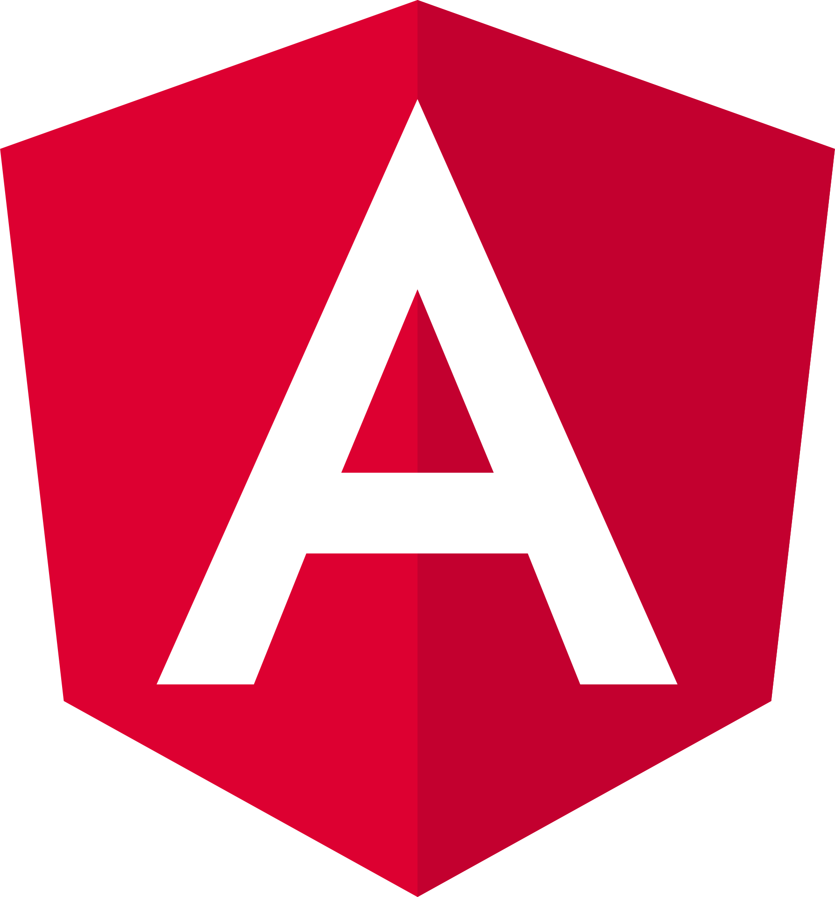
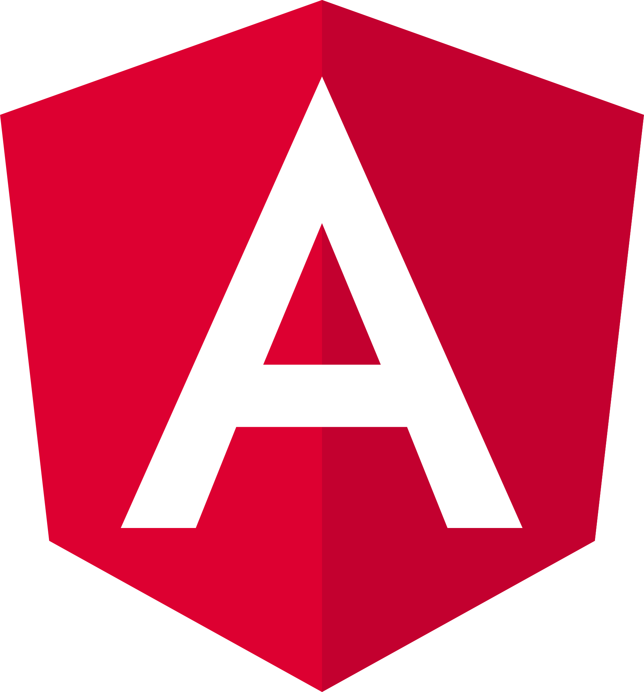

Installés à Villeurbanne chez Human Booster, un lieu dédié à la formation dans le secteur du numérique, notre promotion regroupe 16 membres âgés de 19 à 37 ans. Chacun d'entre nous apporte des expériences variées qui renforcent notre dynamique collective. Cette formation, d'une durée de 12 mois, a débuté en septembre 2024 et se poursuivra jusqu'en septembre 2025, se concluant par un stage professionnel prévu du 16 juillet au 18 septembre 2025. Tout au long de notre parcours, nous explorerons les compétences essentielles pour devenir des développeurs compétents, prêts à relever les défis du monde professionnel.


Décembre : HTML5/CSS3
Nous commençons par l'apprentissage des bases du développement web avec HTML5 et CSS3, pour maîtriser la structure et le style des sites web dans le but d’être capable de faire des sites vitrines.

Janvier : SQL
En janvier, nous aborderons la gestion des bases de données avec SQL, un outil qui nous sera utile par la suite.


Février à avril : PHP/Symfony
Pendant cette période, nous approfondirons le développement back-end avec PHP et le framework Symfony. Utilisant tout ce qu’on a appris jusqu’alors.
 

Mai à juin : JavaScript/Angular
Enfin, nous nous concentrerons sur le développement front-end interactif avec JavaScript et le framework Angular. Finissant ainsi de voir tous les aspects du développement web.
Juillet à septembre : stage
Pour clôturer notre formation, nous effectuerons un stage de deux mois, du 18 juillet au 16 septembre 2025. Ce sera l'occasion de mettre en pratique toutes les compétences acquises au cours de l'année, en nous immergeant dans des projets réels et professionnels, afin de préparer au mieux notre entrée dans le secteur du développement web et mobile.
Michel G. - RAN et TRE
Maxime C. - RAN Bureautique
Pierre P. - RAN esprit critique et IA
Cyril C. - Web statique et Javascript
Asna K. - Expression Orale
Gaëtan T. - Technique PHP Algorithmique Symfony
Lucas D. - SQL Base de donnée WS Rest Symfony
Maxime T. - Linux
Lewis W. - Anglais
Nicolas R. - Outils de la TRE Communication
Jérôme N. - Conception Web Maquettage Wordpress
Frédéric L. - Eco-conception
Frédéric B. - SEO
Rama S. - Angular
Michel G. - RAN et TRE
Maxime C. - RAN Bureautique
Pierre P. - RAN esprit critique et IA
Cyril C. - Web statique et Javascript
Asna K. - Expression Orale
Gaëtan T. - Technique PHP Algorithmique Symfony
Lucas D. - SQL Base de donnée WS Rest Symfony
Maxime T. - Linux
Lewis W. - Anglais
Nicolas R. - Outils de la TRE Communication
Jérôme N. - Conception Web Maquettage Wordpress
Frédéric L. - Eco-conception
Frédéric B. - SEO
Rama S. - Angular